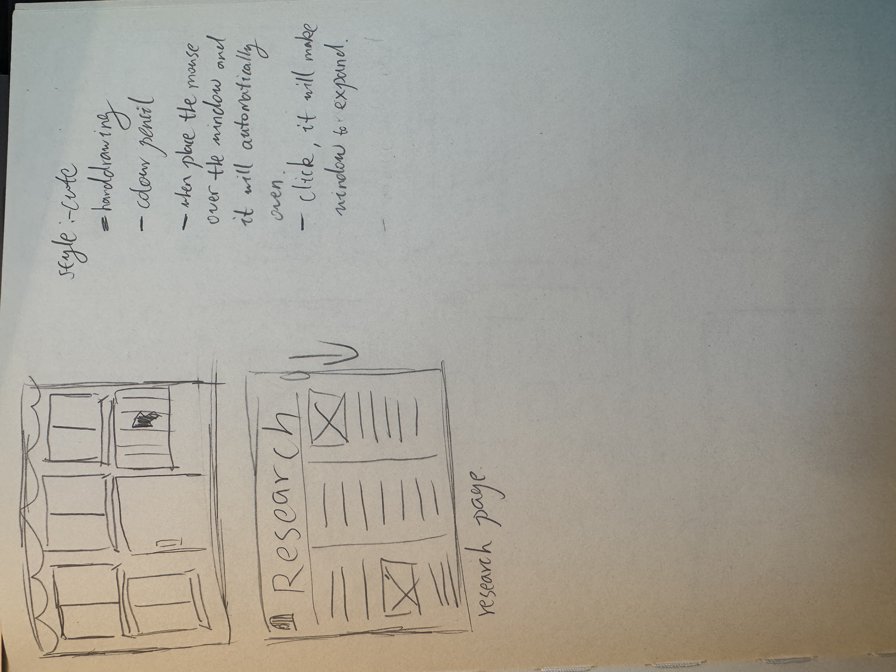
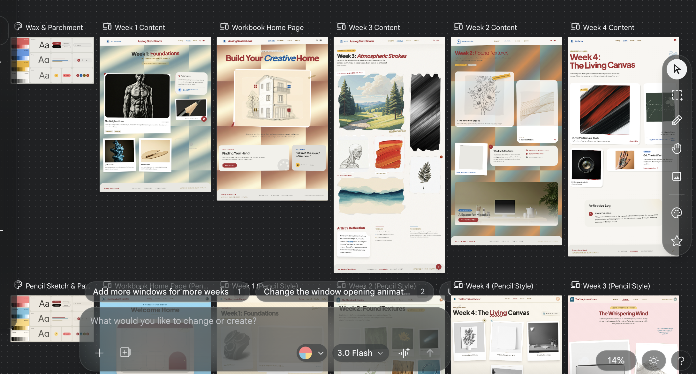
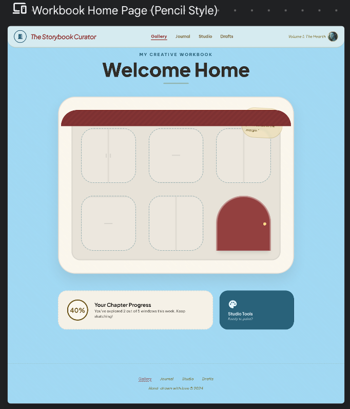
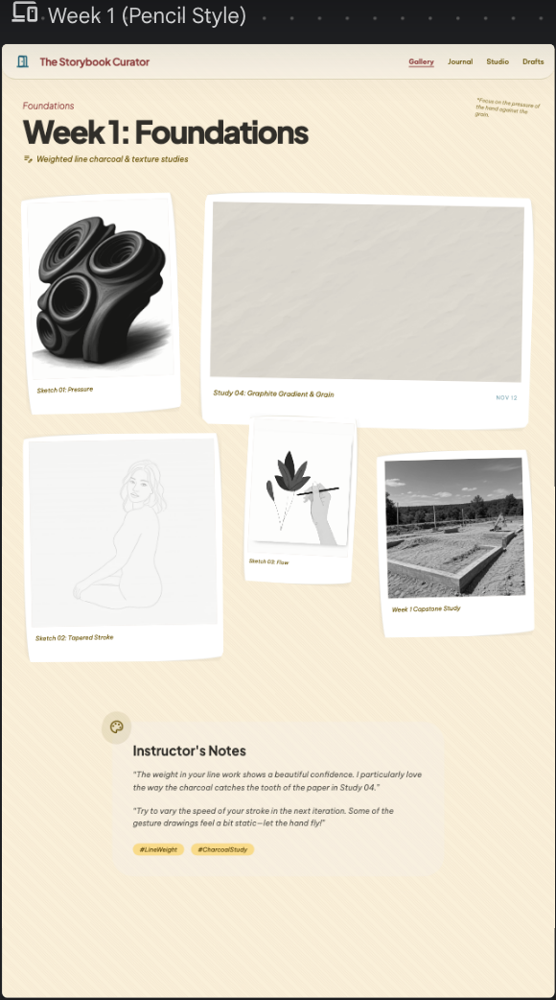
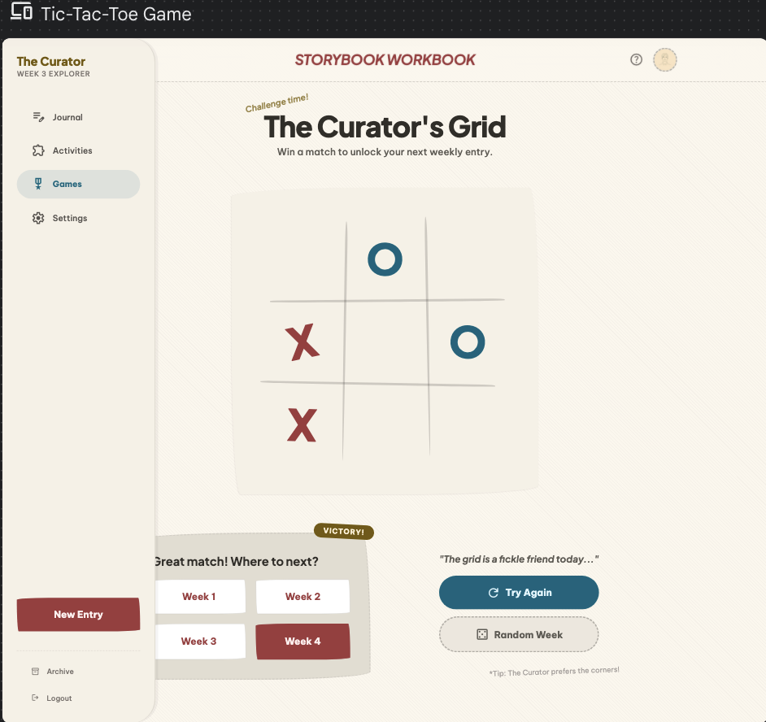
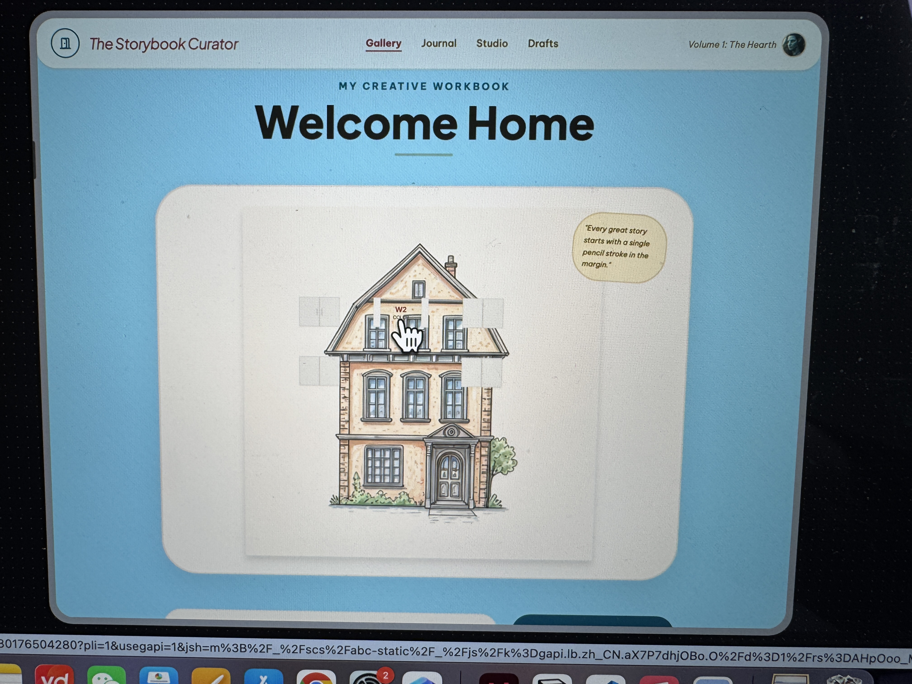

Back
Week 3






![This is the rough sketch of my workbook website concept. I hope the appearance of my homepage will be like a pencil-drawn house with many windows. When each window is opened, it will lead to a different section of the week. At the same time, I also want there to be an effect where the mouse hovers over a window to reveal it opening. After entering the weekly page, I have come up with two ways to present the work for this week. One is a photo wall, and the other is in the form of a gallery. When you click on it, the effect is that the pictures will be enlarged in the middle position, while there are text descriptions beside them. Regarding this door in the middle of the house, I think some interesting designs can be made. That is, when you open the door, there will be a staircase, truly creating a feeling of entering a house. The pattern on the staircase might be randomly selected from the content of a certain week. Every time you click the door, you might be randomly taken to a certain week.](images3/sketch1.jpg)